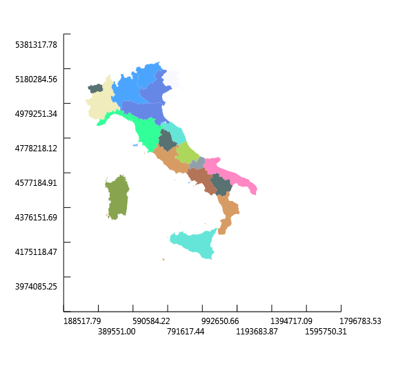

Vector Layers
This section will use the OGR API Tutorial as the principal reference to show how to use OGR classes to read and write data from a file.
Configure gdal
Initially it is necessary to register all the format drivers that are desired. The FSharp.Gdal library
accomplishes this calling the function Configuration.Init():
1:
|
|
Open the datasource
Next we need to open the input OGR datasource. Datasources can be files, RDBMSes, directories full of files, or even remote web services depending on the driver being used. However, the datasource name is always a single string.
In this case we will open a shapefile provided by the Italian National Institute of Statistics (Istat) containing the administrative limits of italian regions.
1: 2: 3: 4: 5: |
|
Inspecting the layers
A GDALDataset can potentially have many layers associated with it.
As a GDALDataset can be viewed as a database, a layer in it can be thought of as a database table containing records with the same columns definition.
The number of layers available can be queried with
GetLayerCount() and individual layers fetched by index using GetLayerByIndex.
1: 2: 3: |
|
|
1:
|
|
One of the goals of this project is to develop functions to make it easier (and more idiomatic) to work with OGR/GDAL library in F#.
In this particulare case instead of using the low level GDAL methods we can use an utility
function layers defined in the FSharp.Gdal.Vector moduel which returns the layers
in a Vector DataSource as a list.
Below I will use more of these utility functions whose definitions can be viewd directly in the source code of the Vector module.
1:
|
|
|
1:
|
|
Get layers features
A layer contains a set of features that can be viewed as records of a database table.
Again, I will use an utility function features that returns the features stored in
a vector layer as an F# list:
1: 2: |
|
Get layers attributes
A layer has a definition containing attributes that can be viewed as columns of a table.
Here the function fields returns a tuple of all the index, name and type of the field
in the layer's definition.
1: 2: 3: 4: |
|
|
In this case the attribute "Regione" is the region's name so we can iterate over all features to get all the italian regions' names quering the field with index 1:
1: 2: 3: |
|
Get geometries of all features in a layer
In addition to attributes a feature contains a geometry field.
In this case each feature corresponds to an italian region. So We can collect all features' geometries in a geometry collection and plot it to get a map of italy divided by regions:
1: 2: 3: 4: 5: 6: |
|

namespace FSharp
--------------------
namespace Microsoft.FSharp
from FSharp.Gdal
Full name: FSharp.Gdal.Configuration.Init
Full name: Microsoft.FSharp.Core.Operators.ignore
Full name: Vector-layers.italyShp
Full name: Vector-layers.driver
type Ogr =
new : unit -> Ogr
static val wkb25DBit : int
static val ogrZMarker : int
static val OGRNullFID : int
static val OGRUnsetMarker : int
static val OLCRandomRead : string
static val OLCSequentialWrite : string
static val OLCRandomWrite : string
static val OLCFastSpatialFilter : string
static val OLCFastFeatureCount : string
...
nested type GDALErrorHandlerDelegate
nested type GDALProgressFuncDelegate
Full name: OSGeo.OGR.Ogr
--------------------
OGR.Ogr() : unit
Full name: Vector-layers.ds
Full name: Vector-layers.layersCount
Full name: Microsoft.FSharp.Core.ExtraTopLevelOperators.printfn
Full name: Vector-layers.layer0
Full name: Vector-layers.layers
from FSharp.Gdal
Full name: FSharp.Gdal.Vector.layers
Full name: Vector-layers.layer
module List
from Microsoft.FSharp.Collections
--------------------
type List<'T> =
| ( [] )
| ( :: ) of Head: 'T * Tail: 'T list
interface IEnumerable
interface IEnumerable<'T>
member GetSlice : startIndex:int option * endIndex:int option -> 'T list
member Head : 'T
member IsEmpty : bool
member Item : index:int -> 'T with get
member Length : int
member Tail : 'T list
static member Cons : head:'T * tail:'T list -> 'T list
static member Empty : 'T list
Full name: Microsoft.FSharp.Collections.List<_>
Full name: Microsoft.FSharp.Collections.List.head
Full name: Vector-layers.features
Full name: FSharp.Gdal.Vector.features
Full name: Vector-layers.featuresCount
Full name: Vector-layers.attributes
Full name: FSharp.Gdal.Vector.fields
OGR.Feature.GetFieldAsString(id: int) : string
Full name: Vector-layers.geomcol
type Geometry =
new : type:wkbGeometryType -> Geometry + 2 overloads
member AddGeometry : other:Geometry -> int
member AddGeometryDirectly : other_disown:Geometry -> int
member AddPoint : x:float * y:float * z:float -> unit
member AddPoint_2D : x:float * y:float -> unit
member Area : unit -> float
member AssignSpatialReference : reference:SpatialReference -> unit
member Boundary : unit -> Geometry
member Buffer : distance:float * quadsecs:int -> Geometry
member Centroid : unit -> Geometry
...
Full name: OSGeo.OGR.Geometry
--------------------
OGR.Geometry(type: OGR.wkbGeometryType) : unit
OGR.Geometry(cPtr: nativeint, cMemoryOwn: bool, parent: obj) : unit
OGR.Geometry(type: OGR.wkbGeometryType, wkt: string, wkb: int, wkb_buf: nativeint, gml: string) : unit
| wkbUnknown = 0
| wkbPoint = 1
| wkbLineString = 2
| wkbPolygon = 3
| wkbMultiPoint = 4
| wkbMultiLineString = 5
| wkbMultiPolygon = 6
| wkbGeometryCollection = 7
| wkbNone = 100
| wkbLinearRing = 101
...
Full name: OSGeo.OGR.wkbGeometryType
Full name: Vector-layers.italyRegionsPlot
type Plot =
new : geom:Geometry -> Plot
member SaveAsBitmap : fileName:string -> unit
Full name: Plot-geometry.Plot
Plots an OGR.Geometry on a Xaml Window
--------------------
new : geom:OGR.Geometry -> Plot